Narrated user guide
Bolt Analysis Studio 1.0.0 · One step per tab of the program. Each page has the screenshot from this build, the audio narration, the transcript and a table with every button and every variable that appears there.
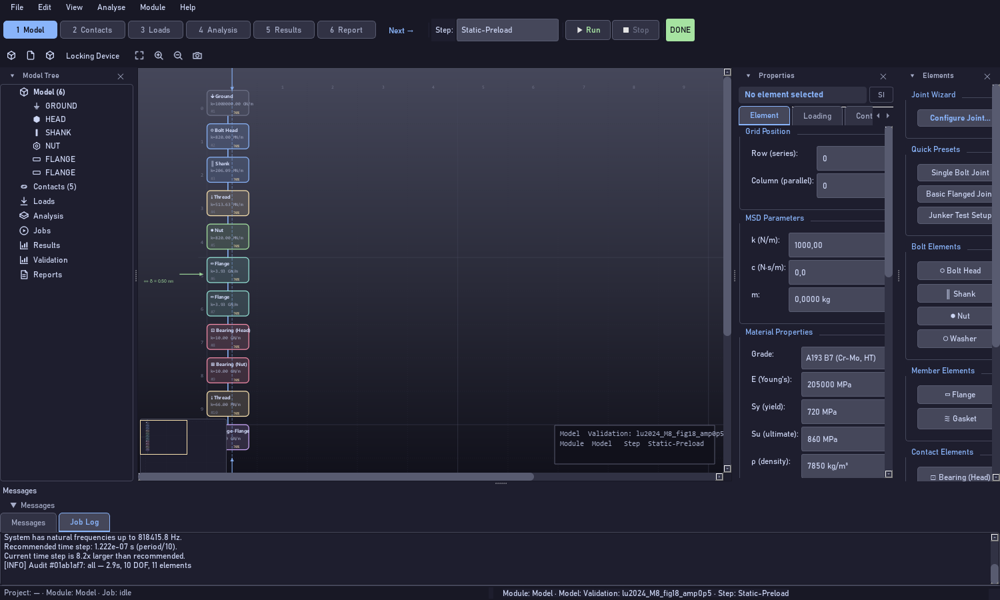
1. What Bolt Analysis Studio does
4 controls · 🔊

2. Three ways to start
10 controls · 🔊
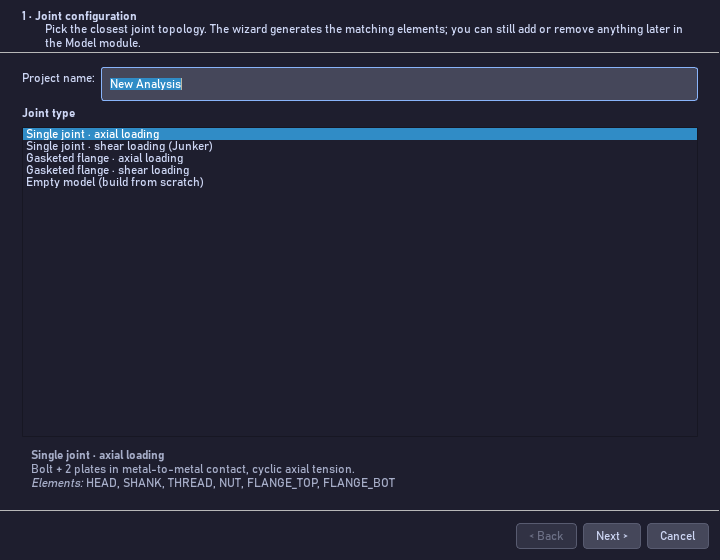
3. The new-analysis wizard
13 controls · 🔊
4. Anatomy of the window
9 controls · 🔊
5. Model — building the chain
7 controls · 🔊
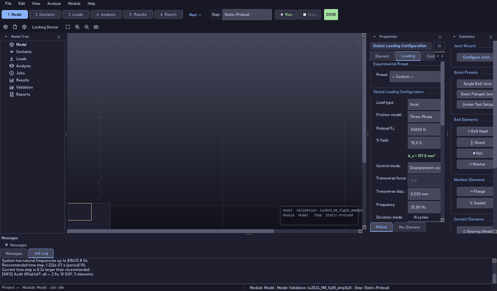
6. Building your first MSD model
9 controls · 🔊
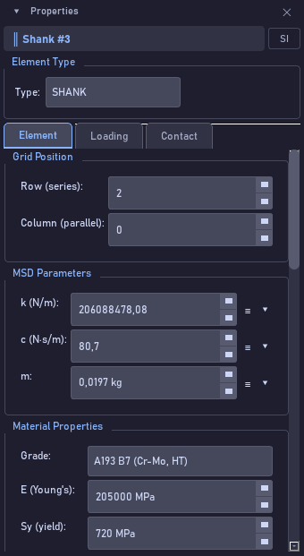
7. Properties — Element tab
17 controls · 🔊
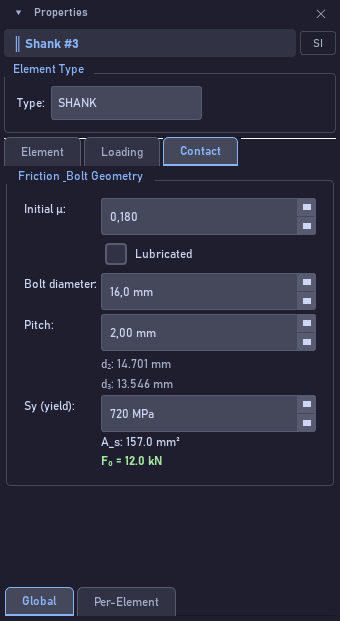
8. Contacts — friction and tribology
8 controls · 🔊

9. Loads — the loading
12 controls · 🔊
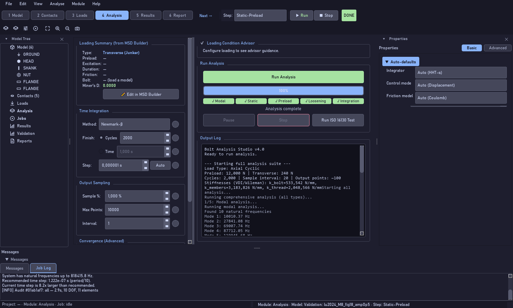
10. Analysis — running
7 controls · 🔊
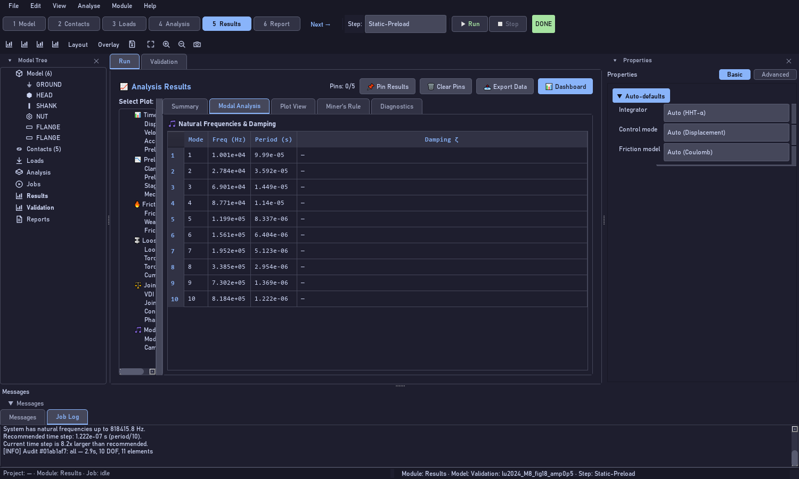
11. Results — reading the result
5 controls · 🔊

12. Results › Validation — the corpus
8 controls · 🔊
13. Consulting the validation cases
11 controls · 🔊
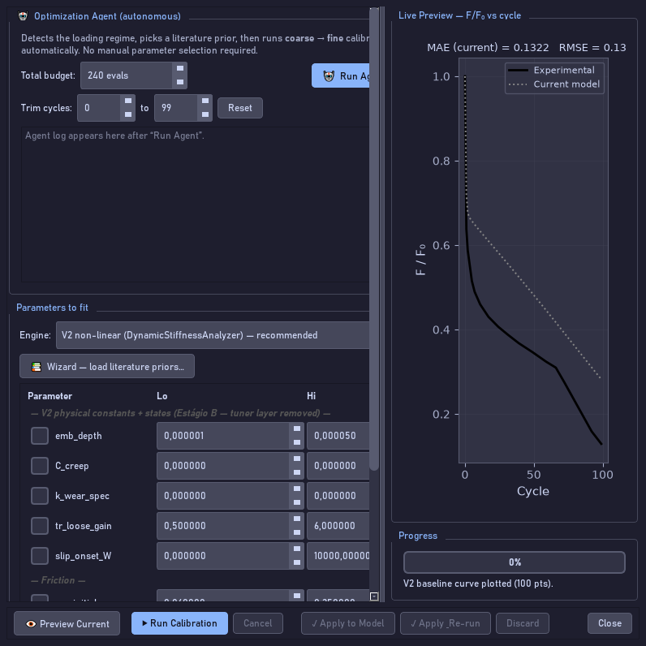
14. Calibrate parameters (Ctrl+K)
9 controls · 🔊
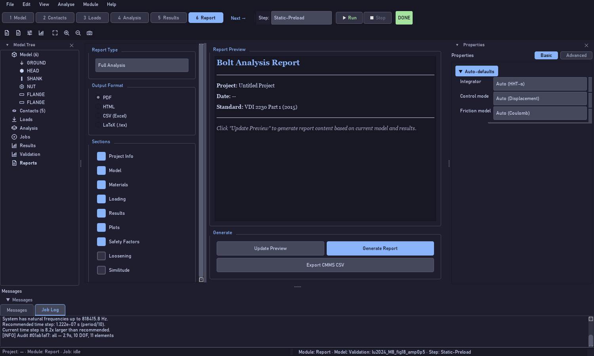
15. Report — the document
3 controls · 🔊
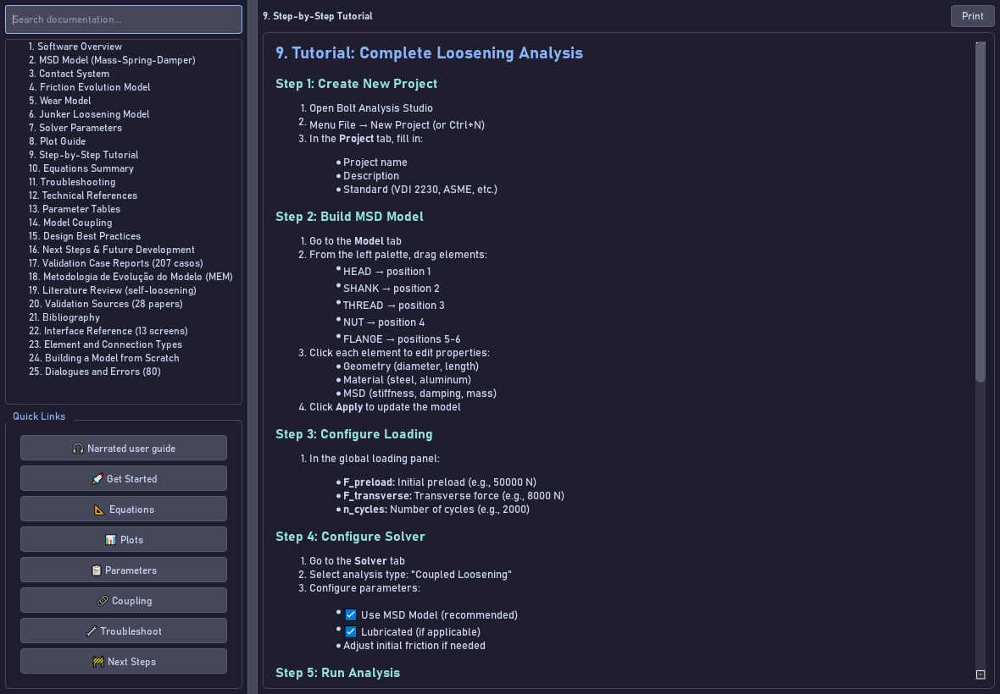
16. Help — documentation and language
9 controls · 🔊
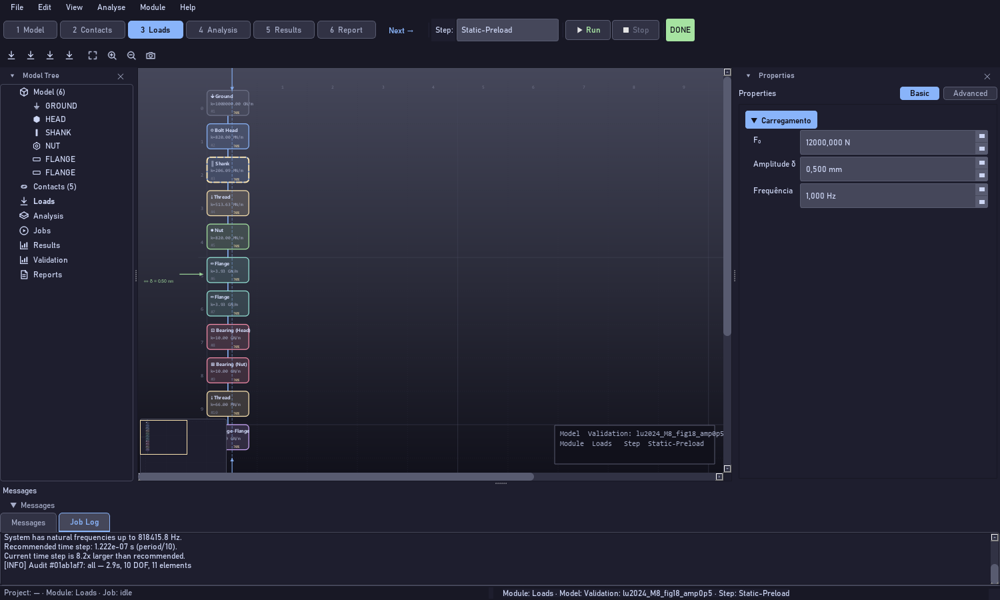
17. Saving, reopening and shortcuts
7 controls · 🔊